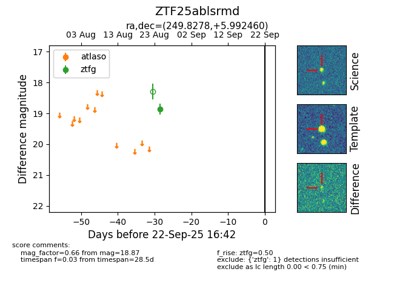

FINK: ZTF25ablsrmd
Lasair: ZTF25ablsrmd
ALeRCE: ZTF25ablsrmd
ZTF25ablsrmd (ztf,fink)
equatorial (ra, dec) = (249.8278,+5.99246)
galactic (l, b) = (22.4483,+32.01141)

last ztfg=18.87
1 ztfg detections